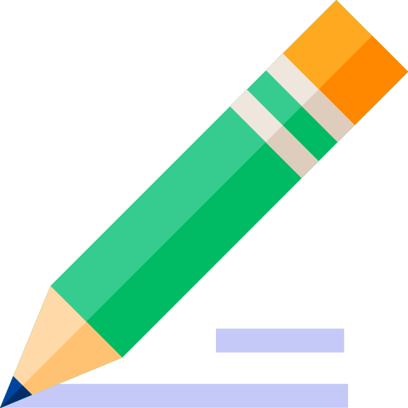

Notes

I woke up on Tuesday the 18th at around 9 am. I was kind of tired since I stayed up late watching YT videos all night. I brushed my teeth a minute longer than usual because of my braces. I had recently gotten that installed last week. People said it would hurt for like a few weeks, but for me, it only hurt for two days. I’m not at the stage where I can eat everything, but I can eat my daily meals.
went paintballing with my friends that afternoon, and I can’t lie, it was enjoyable. My brother and one of my friends got drafted as team leaders, but to my surprise, I got drafted first onto my brother’s team. I went paintballing last week with them in a different arena, but I played horribly so I didn’t understand my brother’s playing style. However, that first round, my friends played very passively which allowed me to pick them off one by one without them noticing. The same thing happened that second round where I picked them off. I usually shot them thrice to ensure I hit them, although they were really mad about that since PAINTBALLS HURT. The last round was not as fun as I can remember. A professional paintballer joined us to make the 5v4 a 5v5. I was against him and my team got absolutely pummeled.
In the night, I had some Chinese food as my friends also came over. We watched Mean Girls since it’s a classic and enjoyed it. We also had time for one more movie and watched Ace Ventura, a classic that never gets any worse when you watch it. My friends left around midnight and well it was a really fun day until I realized that I forgot to do my homework for my Alpha Coding class. I would have been able to do it in the morning, but I had to get my uniform for school since it alternates between online and in-person. Right after that, I got new frames so I just crammed in my homework with 10 minutes I had before my class :/
© 2020 Ali-Aryan. All rights reserved. If not, I'll see you in court.